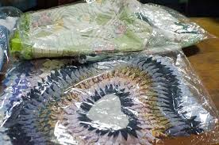
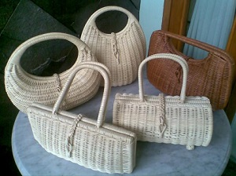

1. Kaset kaki

Produk-produk yang dapat dihasilkan oleh desa ciburial salah satunya adalah keset kaki(alat pembersih yang terdiri dari bagian serat atau serabut kaku dan biasanya terpasang atau terikat menjadi satu bagian tipis). Uniknya keset kaki yang dibuat oleh desa ini berbahan dasar kain yang tidak digunakn lagi atau kain bekas.
2.kerajinan

Ada banyak sekali benda-benda kerajinan tangan hasil tangan-tangan kreatif para pengrajin ciburial.
Rata-rata berbagai benda kerajinan tersebut terbuat dari bahan yang sederhana seperti kayu, bambu,plastik.
3. Gula

Gula Merah khas Ciburial banyak diminati oleh masyarakat baik dalam desa maupun diluar desa. Hal ini dikarenakan gula merah yang berasal dari desa ini memiliki bahan dasar yang alami tanpa bahan-bahan kimia lainnya. Proses pembuatan gula merah(gula aren) dimulai dari pengambilan air buah enau di pagi hari dan dimasak sampai 10 jam. Setelah itu dicetak ke cetakan kayu hingga mengeras sampai 15 menit. Disamping itu harga gula aren ini juga relatif murah yaitu sekitar 20 ribu rupiah per bungkusnya. Itulah yang membuat gula aren khas Desa Ciburial banyak diminati masyarakat.
4. Madu

Desa Ciburial bukan hanya terkenal sebagai daerah pertanian yang subur,tapi terkenal juga akan ternak madunya.Ternak lebah madu dan ternak hewan lainnya sudah berlangsung lana, sekitar lebih dari lima tahun.Para petani madu dapat menghasilkan madu satu kwintal dalam sebulan.Produk madu warga desa wisata Ciburial ini dipasarkan sampai ke Bandung, Jakarta, Sumatera, Kalimantan, hingga Malaysia. Madu Ciburial sangat diminati karena kepercayaan konsumen terhadap khasiat madu.
5. Kopi

Rahasia yang membuat Kopi aroma ini terasa nikmat adalah pemilihan biji kopi yang tidak sembarangan, dan kopi yang dibeli dari seluruh petani kopi di Indonesia tidak langsung diproduksi tetapi melalui tahapan-tahapan seperti pencucian, dibersihkan dari kotoran dan kumudian disimpan paling lama 8 tahun untuk kopi Arabika dan 5 tahun untuk kopi robusta dan dari proses penyimpanan inilah yang kemudian menurunkan kadar asam dari kopi sehingga membuat kopi berasa nikmat dan dan sehat untuk dikonsumsi.
Untuk harga kopinya sendiri berapa ? jangan khawatir sahabat, semua harga yang ditawarkan oleh toko kopi aroma di jalan banceuy kota bandung ini sangat terjangkau bagi ukuran kantong siapa pun juga, terlebih bagi anda penikmat atau benar-benar penggila kopi, harga tentunya bukan lagi sebuah kendala hanya untuk bisa menikmati segelas cita rasa kopi istimewa dan berkualitas seperti kopi aroma bukan ?